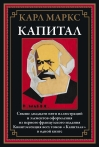

Galvenie avoti
Informācija tika apkopota no dažādiem publiski pieejamiem un izglītojošiem avotiem.
Latviešu valodā sagatavota informācija
Rūdolfa Blaumaņa luga “Skroderdienas Silmačos” un Kārļa Marksa “Kapitāls” rāda divas dažādas pasaules: latviešu lauku sadzīvi un sabiedrības ekonomisko uzbūvi.
Izmantotie avoti
Publiski pieejami materiāli par Rūdolfu Blaumani un “Skroderdienas Silmačos”, tostarp enciklopēdijas un literatūras resursi.
Informācija tika apkopota no dažādiem publiski pieejamiem un izglītojošiem avotiem.
Rūdolfs Blaumanis
Izdošanas un skatuves sākums: 1902. gads

“Skroderdienas Silmačos” ir jautra un dzīva luga par gatavošanos Jāņiem Silmaču mājās. Tajā savijas mīlestība, pārpratumi, greizsirdība, saimnieciskas rūpes un latviešu svētku tradīcijas.
Rūdolfs Blaumanis bija latviešu rakstnieks, dramaturgs un žurnālists. Viņa darbos cilvēki nav tikai “labi” vai “slikti”: viņiem ir bailes, cerības, spītība un sirds siltums.
Antonija bieži rīkojas pēc jūtām, tāpēc kļūst gan smieklīga, gan cilvēcīga. Elīna ir klusa, bet viņas izvēles ir svarīgas. Dūdars un citi skroderi rada sadzīvisku troksni, kas padara lugu ļoti dzīvu.
“Jāņi nāk, un Silmačos viss kļūst skaļāks, jautrāks un sarežģītāks.”
Brīvs, kopsavilkuma tipa citāts par lugas noskaņu.
Rūdolfs Blaumanis bija ievērojams latviešu rakstnieks, dramaturgs un žurnālists, viens no nozīmīgākajiem latviešu literatūras klasiķiem.

Rūdolfs Blaumanis dzimis 1863. gada 1. janvārī Ērgļu pagasta “Brakos”, Vidzemē. Tagad šī vieta ir pazīstama kā Braku muzejs.
Viņš nomira 1908. gada 4. septembrī Somijā, Takaharju sanatorijā no tuberkulozes. Rakstnieks apglabāts Rīgā, Meža kapos.
Kārlis Markss
Izdošanas datums:


“Kapitāls” analizē kapitālistisko ekonomiku: preces, naudu, darbu, peļņu, ražošanu un sabiedrības šķiru attiecības. Tā nav viegla lasāmviela, bet tā ietekmēja politiku, ekonomiku un filozofiju.
Kārlis Markss bija vācu filozofs, ekonomists un sabiedrības kritiķis. Viņš pētīja, kā ekonomiskās attiecības ietekmē cilvēku dzīvi, darbu un varu sabiedrībā.
Markss rāda, ka ekonomika nav tikai skaitļi. Viņš uzsver, ka aiz precēm un naudām stāv cilvēku darbs. Tāpēc grāmatas centrā ir jautājums: kas iegūst labumu no darba rezultātiem?
“Prece vispirms ir ārējs priekšmets, kas apmierina cilvēka vajadzības.”
Brīvs tulkojums no “Kapitāla” sākuma domas.
Kārlis Markss bija vācu filozofs, ekonomists, žurnālists un sabiedrības teorētiķis. Viņa idejas spēcīgi ietekmēja politiku, ekonomikas domāšanu un 19.-20. gadsimta vēsturi.

Kārlis Markss dzimis 1818. gada 5. maijā Trīrē, Vācijā. Viņš studēja tiesības, filozofiju un vēsturi.
Markss nomira 1883. gada 14. martā Londonā. Viņš apglabāts Haigeitas kapsētā Londonā.
Mūsuprāt, šī luga ir interesanta, jo tajā nopietnas jūtas ir parādītas ar humoru. Darbs šķiet dzīvs un viegli saprotams, jo personāži strīdas, iemīlas, kļūdās un svin tāpat kā īsti cilvēki. Īpaši patīk Jāņu noskaņa, kas padara lugu latvisku un siltu.
“Kapitāls” ir grūtāks darbs, bet tas ir vērtīgs, jo liek domāt par darbu, naudu un nevienlīdzību. Mums šķiet, ka šo grāmatu nevar lasīt kā parastu stāstu, tomēr tās idejas palīdz saprast, kā sabiedrībā rodas bagātība un kāpēc cilvēki par to strīdas.
Mums šķiet, ka “Skroderdienas Silmačos” ir tuvāks un vieglāk uztverams darbs, jo tajā ir humors, svētki un pazīstamas cilvēku emocijas. “Kapitāls” ir sarežģītāks, bet tas liek domāt par darbu, naudu un taisnīgumu sabiedrībā. Abi darbi ir nozīmīgi, jo palīdz labāk saprast cilvēkus: viens caur sadzīvi un teātri, otrs caur ekonomiku un kritiku.